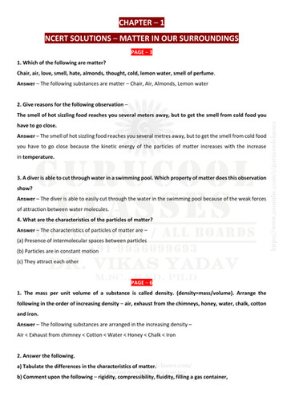

Watermark Detection of NCERT Textbook
Whether the watermark is clearly visible in the sofycopy of the NCERT textbook
Water mark is visibleNext...
Originality Detection

Whether the watermark is clearly visible in the sofycopy of the NCERT textbook
Water mark is visible